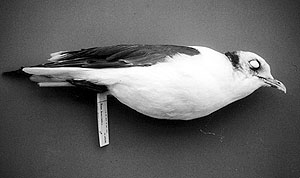

|  |
|
Figure 2. Red-legged Kittiwake, Rissa brevirostris (1996-069), found in Anaheim, Orange Co., 28 February 1996 and taken to Pacific Wildlife Project, where it died 15 March 1996. The specimen is retained in the Natural History Musem of Los Angeles County (LACM 109199) and represents the first record for California. Photo by Kimball L. Garrett |